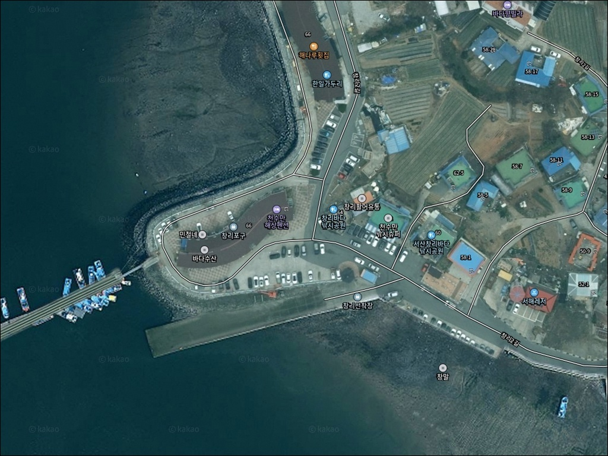
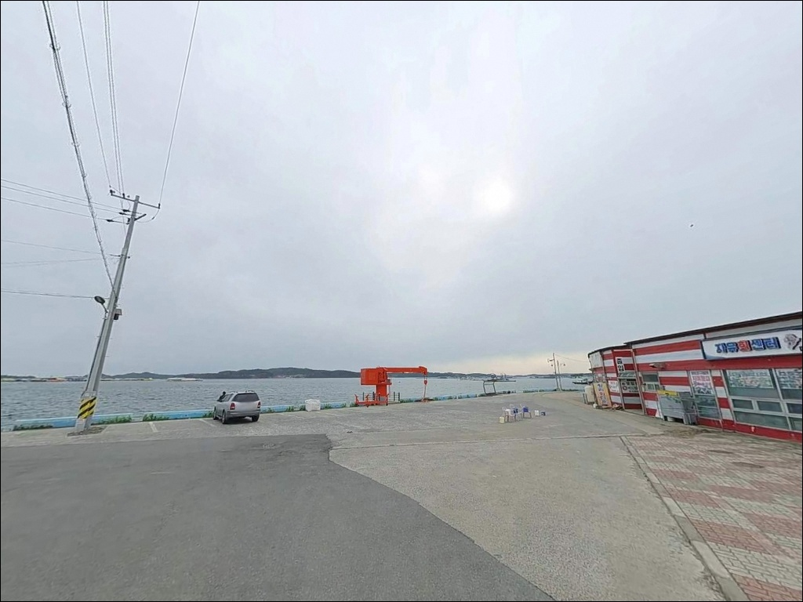
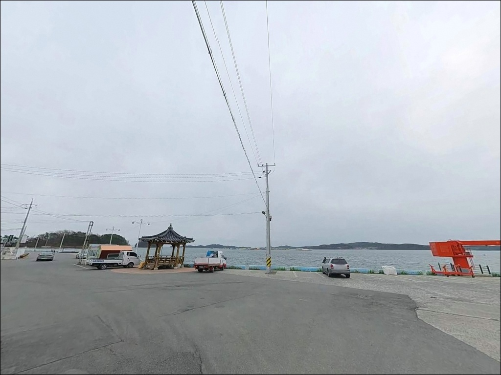
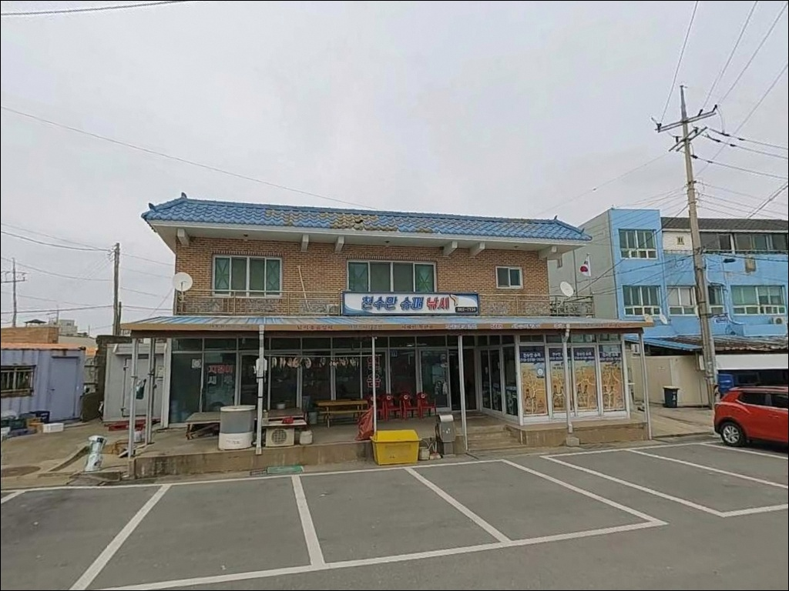
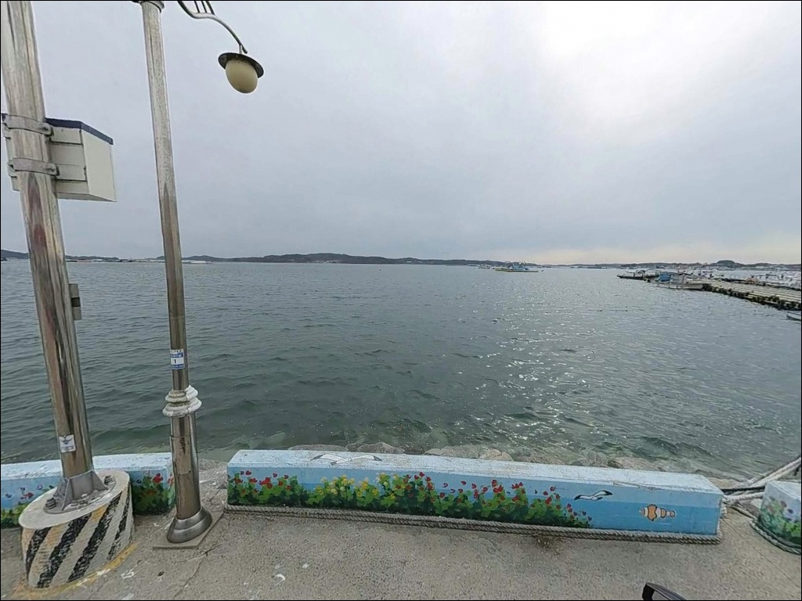
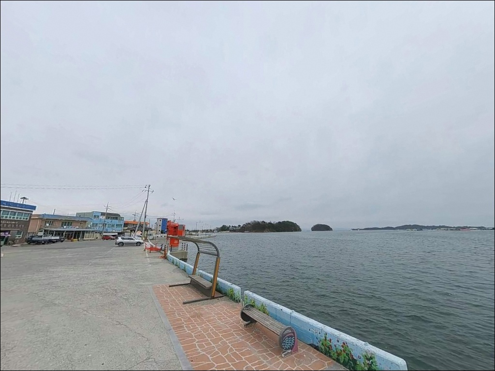
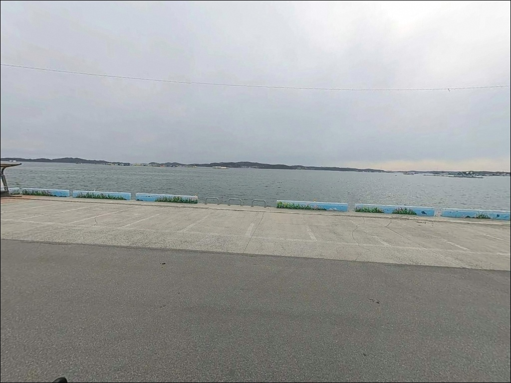
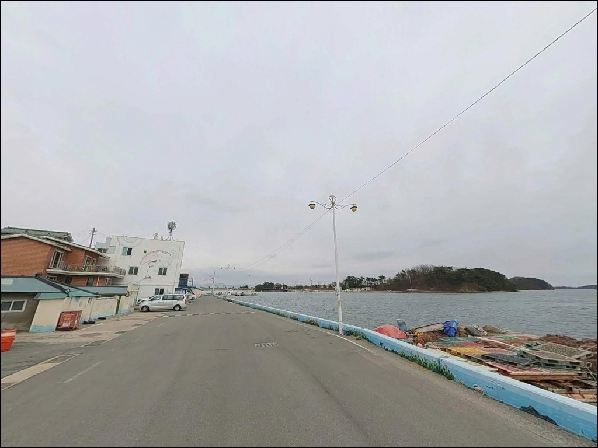
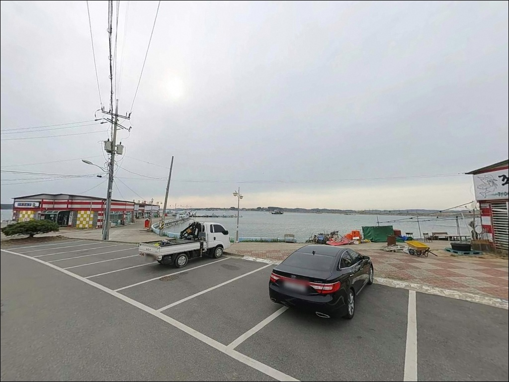

창리포구 (창리선착장), 충남 서산시 노을빛이 스며드는 차박, 낚시 겸용 감성 장소
이 페이지에는 광고(제휴 링크 포함)가 있으며, 광고 링크를 통해 구매하면 운영자가 판매 수익 또는 수수료를 받을 수 있습니다. 포인트 사진: 카카오맵 스카이뷰·로드뷰. 이 페이지의 지도·사진 이미지는 카카오맵의 실제 서비스 이미지와 다를 수 있습니다.


포인트 안내
창리포구
충남 서산시 부석면 창리 295
천수만 B지구 방조제권 포인트에서
가장 많이 틀리는 판단은
물때만 확인하고 출조를 결정하는 것입니다.
부남호 담수가 방류되는 시점에는
어떤 채비를 써도 수질이 버티지 못해
조황 자체가 성립하지 않는 상황이
발생합니다.
충남 서산시 부석면 창리 295,
천수만 안쪽에 자리한 창리포구는
쭈꾸미·갑오징어 워킹 낚시로 알려진 서해 내만 포구입니다.
좌대낚시 시설이 포구 주변에 밀집해 있어
물때와 방류 조건에 따라 선택지를 넓힐 수 있는
구조를 갖추고 있습니다.
이 글은 창리포구의 진입 환경, 낚시 가능 조건,
방류 확인 경로, 좌대 활용 기준을 중심으로 정리합니다.
조황 단정이나 특정 어종 보장은
이 글의 범위에 포함되지 않습니다.

1. 진입 동선과 포인트 접근성
창리포구는 부석면 창리 방향으로 이어지는
포장도로를 통해 차량 접근이 가능한 구조입니다.
진입 마지막 구간은 포구 방향으로 내려가는
내리막 형태로, 일반 승용차와 중형 SUV는
큰 어려움 없이 진입할 수 있는 수준입니다.
선착장 인근 공터가 주요 주차 후보지이며,
포구 주변 횟집·좌대 사무실 앞 공간도
낚시객이 자주 활용하는 구간입니다.
가을 쭈꾸미 시즌에는 좌대 이용객 차량이
집중되는 편이라,
이른 시간 진입이 여유 있는 자리 확보의 기준이 됩니다.
포구 내부는 어선 접안 구역과 좌대 운영 선박
동선이 겹치는 경우가 있습니다.
주차 후에는 선박 통행을 막지 않는 자리인지
반드시 확인하는 것이 기본 매너입니다.
대형 캠핑카는 회차 공간 여부를
출발 전 확인해두는 편이 안전합니다.

2. 차박 환경과 야간 체류 여건
창리포구는 횟집과 낚시매장이 혼재한 포구 상가 구조입니다.
야간에도 상가 조명과 가로등이 일정 수준 유지되며,
민가와 상업시설이 인접해 있어
완전한 암적응 환경은 기대하기 어렵습니다.
천수만 내만 특성상 외해 직접 노출이 없어
파도와 바람 영향은 비교적 적은 편입니다.
새벽 출조 전후 짧은 휴식 체류 용도로는
활용 가능한 수준이지만,
하룻밤 조용히 머무는 차박이 목적이라면
포구 중심부를 벗어난 인근 해안도로 방면을
별도로 탐색하는 편이 현실적입니다.
슬로프 선착장 구조는 야간 미끄럼 위험이 있습니다.
바닥이 물에 젖으면 특히 발디딤이 불안정해지므로
헤드랜턴과 미끄럼 방지 신발은
야간 현장 체류 시 필수 장비입니다.


3. 주변 편의시설 및 인프라 현황
창리포구 주변은 횟집과 해물 식당이 밀집해 있어
식사와 해산물 구매 여건이 좋습니다.
포구 중심부에 여러 업장이 모여 있어
낚시를 마친 뒤 현장에서 바로 해결할 수 있는
구조를 갖추고 있습니다.
낚시 장비와 미끼 보충을 위한 낚시매장도
포구 인근에 위치해 있습니다.
좌대낚시 안내와 주변 포인트 정보를 함께
확인할 수 있어, 첫 방문이라면
매장에 들러 현장 정보를 먼저 파악하는 것이
도움이 됩니다. 방문 전 운영 여부는 사전에 확인해야 합니다.
편의점이나 마트는 포구 주변에서 확인되지 않습니다.
식수, 얼음, 보조 간식류는 부석면 방면에서
출발 전에 갖춰두는 것이 기본 준비입니다.

4. 방류 정보 모르면 헛걸음이 되는 이유
창리포구 방문 전 반드시 확인해야 할 첫 번째 변수는
부남호 담수 방류 여부입니다.
부남호는 천수만 B지구 방조제 내측 호수로,
방류가 이뤄지면 포구 일대 수질이 급변해
조황이 사실상 성립하지 않는 상황이 발생합니다.
방류 정보는 현대서산농장(041-661-8871)에
문자 알림 신청을 하면 받아볼 수 있습니다.
간월호 방류 정보는 농촌용수종합정보시스템에서
별도로 확인할 수 있습니다.
두 정보를 모두 확인한 뒤에야
물때와 기상 예보 검토로 넘어가는 순서가
창리포구 출조의 기본 절차입니다.
슬로프 지형 특성상 밑걸림이 잦은 포인트입니다.
여분 채비를 넉넉하게 준비하는 것이
현장 손실을 줄이는 방법이며,
좌대낚시 이용 시에는 기상 악화에 따른
운항 가능 여부도 사전에 확인해야 합니다.
구명조끼와 야간 헤드랜턴은 기본 장비입니다.

5. 지형 기반 낚시 여건 분석
창리포구의 주된 낚시 진입 지점은
슬로프 선착장과 방조제 석축입니다.
포구 안쪽은 천수만 내만 특성상 수심이 얕은 편이며,
서해 조류 패턴을 따라
간조 전후 시간대 공략이 기본 패턴입니다.
만조 시간에는 수심이 올라오지만
조류 흐름이 멈추는 구간이 길어집니다.
슬로프 발 앞쪽은 밑걸림이 잦은 지형입니다.
채비를 가까이에서 끌면 손실이 커지는 구조라
멀리 보낸 뒤 천천히 탐색하는 방식이 기본입니다.
해역 내 인공어초 조성 구간이 있어
어초 경계 방향이 탐색 우선 구간이 됩니다.
조류 흐름은 포구 입구와 수로 구간에서
상대적으로 활발한 편입니다.
들물과 썰물 전환 전후로 조류 변화가 발생하는
이 구간이 포인트 집중 시간대입니다.
출조 전 최신 조황은 "창리포구 조황",
"창리선착장 쭈꾸미" 키워드로
먼저 검색해 보시기 바랍니다.


6. 창리포구에 어울리는 낚시 스타일
이 포인트의 메인 낚시는 워킹 에깅입니다.
쭈꾸미와 갑오징어가 주요 대상어로 알려져 있으며,
9~10월 가을 시즌이 워킹 낚시의 주 시즌입니다.
슬로프 지형에서는 가벼운 채비로 멀리 보내
밑걸림을 줄이면서 탐색 범위를 넓히는 방식이
이 포인트에 맞습니다.
좌대낚시도 선택지로 활용 가능합니다.
창리바다낚시공원, 조은좌대 등 복수의 업체가
운영 중으로, 가을 시즌에는 자연 좌대도 운영됩니다.
물때가 맞지 않거나 만조 시간에도
낚시를 이어가고 싶을 때,
또는 가족 단위 방문이라면
좌대가 효율적인 대안이 됩니다.
이용 전 예약 및 운항 여부는 반드시 확인해야 합니다.
원투낚시도 시도해볼 수 있는 방식입니다.
인공어초 조성 구간을 향해 채비를 멀리 보내면
우럭·붕장어 계열을 노리기 적합한
지형 조건입니다.
조류가 살아 있는 정조 전후 타이밍에
바닥 탐색 중심으로 운영하는 방식이
이 포인트 구조에 맞습니다.

7. 대안 포인트와 플랜 B 동선
부남호 방류가 발생했거나
창리포구 자리 여건이 여의치 않을 때는
간월도 A지구 방면이 첫 번째 대안입니다.
B지구 방류 영향권과 분리된 구간으로,
방류 당일에도 조류 조건이 달라
낚시가 가능한 경우가 있습니다.
당암포구는 같은 천수만 B지구 제방권에 속합니다.
창리포구와 포인트 성격이 유사하고
주차 공간이 비교적 넓다는 점에서
대안으로 활용 가능합니다.
다만 부남호 방류 조건은 동일하게 적용되므로
방류 여부를 먼저 확인한 뒤 이동해야 합니다.
창리포구에서 안면도 방면은 차로 수 분 거리입니다.
안면도 인근 방파제와 항구 포인트는
B지구 방류 영향에서 독립된 외해 성격의 구간으로,
에깅과 원투낚시를 모두 소화할 수 있습니다.
당일 출조 일정에서 창리포구와 병행하기 좋은
플랜B 권역입니다.

방류 변수 하나만 파악해도
창리포구가 달라 보입니다
워킹 에깅이나 좌대낚시를 즐기는 낚시인이라면
창리포구의 포구 구조는 잘 맞는 편입니다.
가을 쭈꾸미·갑오징어 시즌에
슬로프와 석축 구간을 탐색하고,
물때가 어긋난 시간에는 좌대로 전환하는
방식이 이 포구에 맞는 운용법입니다.
반면 방류 정보 없이 찾아가거나
물때만 계산하고 출조를 결정하면
수질 변화로 조황이 사라진 상황을
현장에서 맞닥뜨리게 됩니다.
방류 확인, 물때 계산, 여분 채비 준비,
이 세 가지가 창리포구 출조의 기본입니다.
포구 앞 횟집에서 식사를 마치고
새벽 썰물을 기다리며 조용히 쉬어가는
짧은 체류로 시작하기 좋은 곳이기도 합니다.
방류 변수를 파악해두면 재방문 가치가 있는
서산권 포구입니다.